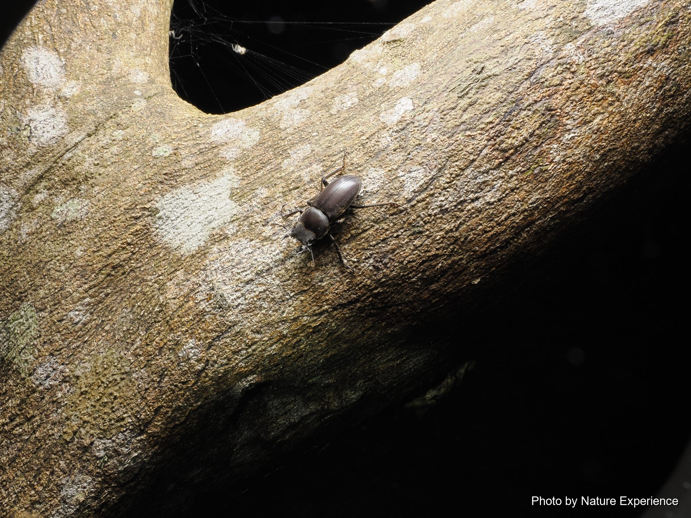
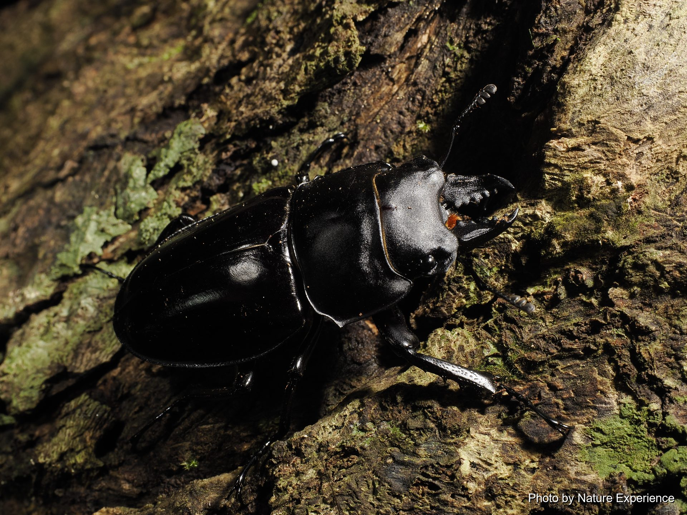
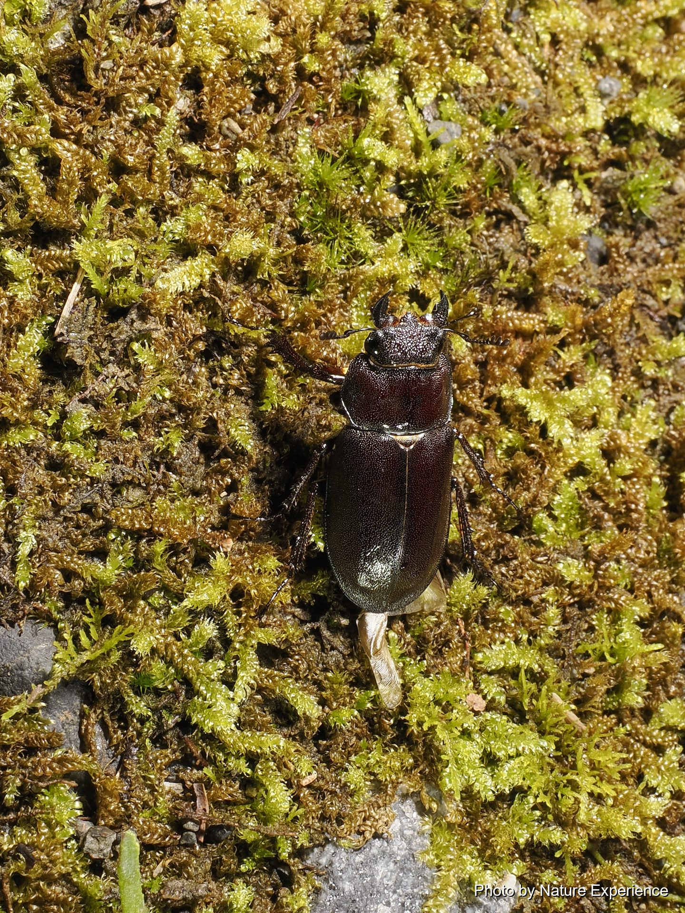
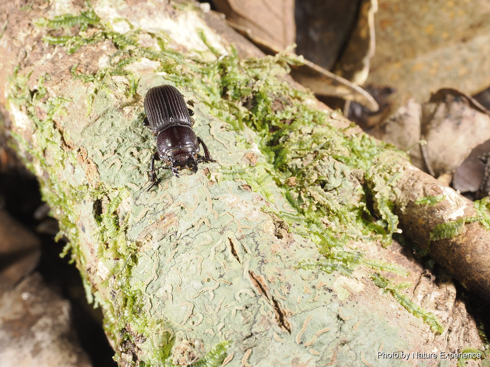

奄美扁锹甲
分布于奄美群岛的扁锹甲亚种。是奄美大岛数量最多的锹形虫。人工饲养下能长得相当大，是很 受欢迎的种类。常聚集在橘树、红楠、椎树、野桐等的树液上。野外个体多在50毫米以下，超过.

CREATURES / KUWAGATA
夏夜，锹形虫循着树液的气味聚集而来。奄美大岛栖息着只有这座岛屿才有的、个性丰富的种类。
ABOUT
奄美大岛的森林中，尤其是在夏夜，会出现各种各样的锹形虫。在渗出树液的树木或林道沿线，有时能发现它们矫健的身姿。
有的拥有巨大的大颚，有的体型娇小、藏身于树皮之中，每个种类的外形和生活方式各不相同，其中也有仅分布于奄美的珍贵种类。
在森林中邂逅它们时，请静静地观察它们吸食树液和活动的样子，并将它们生活在自然中的姿态拍照留念。
请通过拍照来欣赏这些生物。采集及带走的相关规定因物种和地区而异，请事先确认条例及禁入限制，并注意不要损坏渗出树液的树木及其栖息环境。
STAG BEETLES OF AMAMI
介绍在奄美大岛森林中能遇见的锹形虫。点击照片或名称即可查看该物种的详细页面。
分布于奄美群岛的扁锹甲亚种。是奄美大岛数量最多的锹形虫。人工饲养下能长得相当大，是很 受欢迎的种类。常聚集在橘树、红楠、椎树、野桐等的树液上。野外个体多在50毫米以下，超过.
虽然名字带有"小锹甲"，但许多特征与姬大锹形虫相似。大颚短而弯曲有力，足和跗节较长。 活动期为5月下旬至10月。数量不如日本本土的小锹甲多.

活动期为9月至10月左右，可在长满高大椎树的深山密林中观察到。根据奄美大岛(含附属岛 屿)5个市町村及德之岛3个町的稀有野生动植物保护条例，禁止采集。为防止盗猎，山中设有监.

活动期为7月至9月左右。是仅分布于奄美大岛的稀有种。根据条例禁止采集。栖息于海拔300米 以上的原始森林。夜行性，可见雄虫在树木高处等待雌虫，但肉眼很难确认。也常在电线杆顶.

为肥角锹甲的奄美群岛亚种，是国产肥角锹甲各亚种中体型最大的。活动期为5月至10月左右。 有时会飞到红楠、椎树、野桐、楹树等的树液上。野外个体多为20毫米左右，达到28毫米就.

活动期为6月中旬至9月上旬。在日本各地的锯锹甲中，奄美大岛产的个体体型尤其大，大颚长而 粗壮、十分气派。常飞到橘树、野桐、红楠、椎树、成熟的露兜树果实、香蕉诱饵以及路灯处.

全身具光泽，拥有独特形状的大颚，全年都在朽木中度过。全年都能在栎树、椎树等的倒木及落 叶下发现它的踪迹。雌雄难以区分。在奄美分布局限，且几乎不飞到树液上，因此很难被发现.

5月至9月左右活动，8月前后最容易见到。根据条例禁止采集。海拔相对较高的地区发现几率更 高。多附着在椎树或橘树的细枝上。大型个体的大颚会像鹿角一样强烈弯曲。请注意不要将其误.

活动期为4月下旬至10月左右，7月为高峰期。是日本珍稀的固有种，仅分布于奄美群岛，鞘翅 上有8条明显的纵纹。常飞到橘树、红楠、野桐、椎树、香蕉诱饵及路灯处。体长超过60毫米.

EXPLORE MORE
选择一个分类，了解更多奥美大岛的生物。
NIGHT FIELD TOUR
跟着向导一起在夜间森林中寻找生物。
查看夜间旅行团详情及费用 →